to compress the text shown in the field Input text.
A message is displayed on success.
to compress the text shown in the field Input text.
A message is displayed on success.
This online help explains the functioning of the Huffman Coding plug-in.
Contents overview:
1) The tab Compression/Decompression and scenario selection
2) The tab Huffman tree
3) The tab Code table
4) The meaning of the icons in the menu bar
5) References
The Huffman Coding plug-in could be started by the menu Visualization or via the Crypto Explorer tab Visualization.
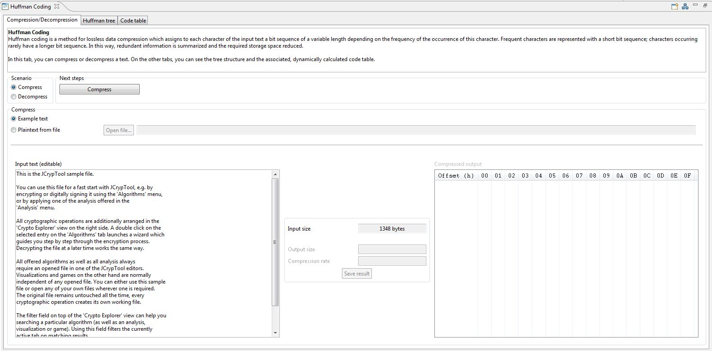
This plug-in contains three tabs: Compression/Decompression, Huffman tree and Code table.
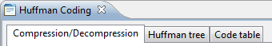
1) On the first tab Compression/Decompression there are two scenarios to choose:
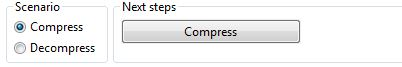
This scenario applies the compression of text. You can load a text file or enter a text into the field Input text.
a) By default you can enter a text manually. An example text is already filled in. You can replace or modify it to your liking. Basic text manipulation commands are supported. At least one character has to be entered to proceed.
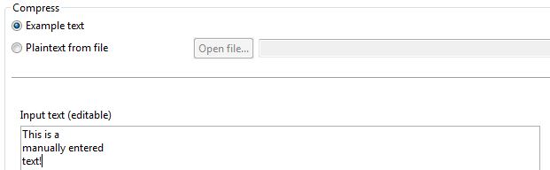
The information box in the middle will be updated with the length of the input. After a successful process this box will contain further information about the compressed data length and compression ratio.
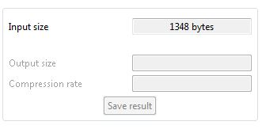
b) To load a text file you have to select Plaintext from file. Now you can click on the button Open file.... A dialog will allow you to select and load a text file (ISO-8859-1). After selecting a file its content will be displayed in the section Input text. The information box in the middle will be updated accordingly and the button Compress enabled. (ISO-8859-1). ISO-8859-1 is a eight bit character encoding standard.
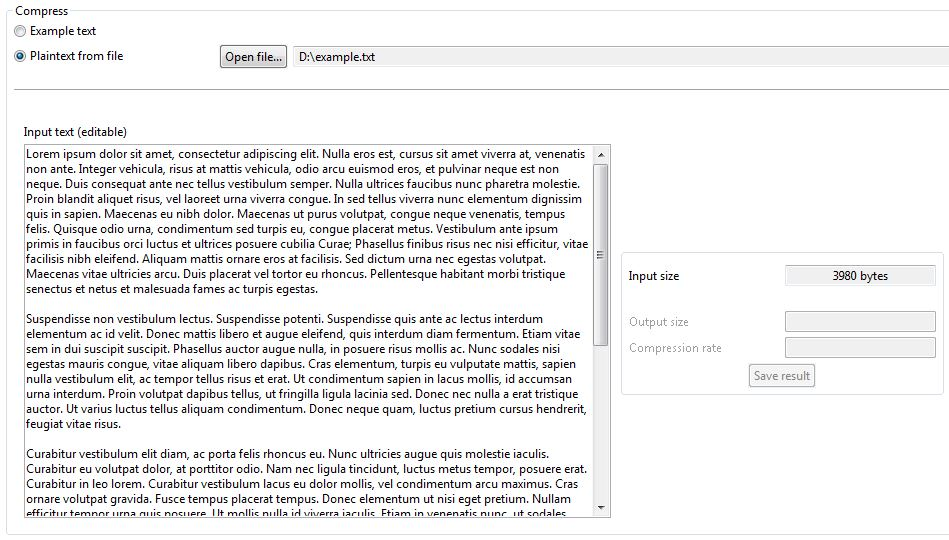
Click the button to compress the text shown in the field Input text.
A message is displayed on success.
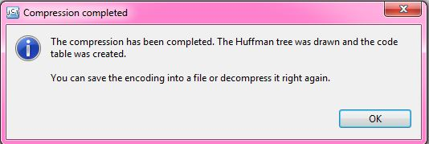
The compressed output data is displayed in binary form in a simple table. It is formatted as hexadecimal numbers.
The first column and row show the position of the byte. There are 16 (0xF) bytes per row. The output seems longer than the input on
first glance. This is because a visual representation of binary numbers in hexadecimal needs more space. The actual size before and after
compression is updated in the information box, as well as the compression ratio.
Note that if you input short text the compressed output can be larger than the input. This happens because encoded information
about the compression (overhead) costs more space than the compression gains.
Click the button Save result to open a file dialog. You can save the binary output as a .huffman file.
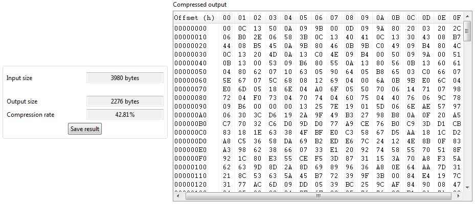
Now you can revert the process in the scenario Decompress or save the result for later usage. Note that this file format may not be usable with other implementations of the Huffman algorithm. Use the generated .huffman file only with JCrypTool.
In this scenario you can transform compressed binary back data into its original form. There are two options: either decompress output you previously generated (for example as validation), or load an existing .huffman file.
a) By default the mode Use from "Compress" scenario is selected. If you already have compressed something in this session, the section Compressed input is automatically filled. Is no output present the section stays empty and the button Decompress is not active.
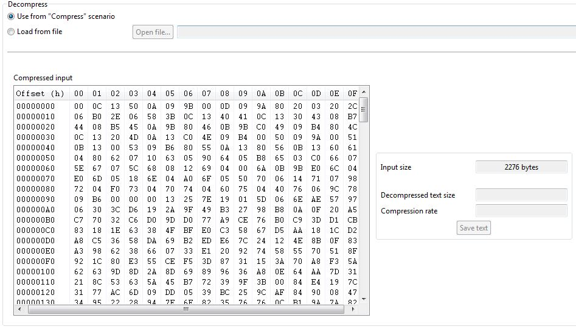
b)In order to load an already existing file, switch to the mode Load from file. The button Open file...
will become active and allow to open a .huffman file through a dialog. Information about the loaded binary file will be filled in, and the
Decompress button is active.
Note that the format of these .huffman file may not be usable with other implementations of the Huffman algorithm. Use only files generated
by JCrypTool.
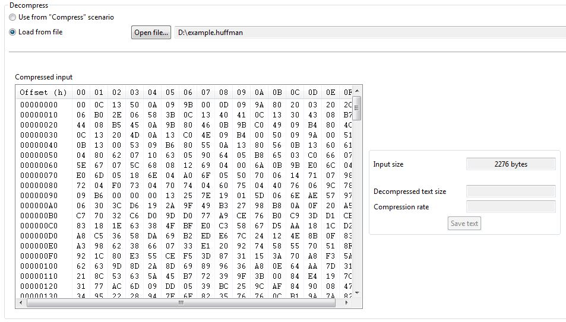
A click on the button will uncompress the file and display the reconstructed text in the field Decompressed output. In addition information about size and compression ratio will be updated in the information box in the middle.
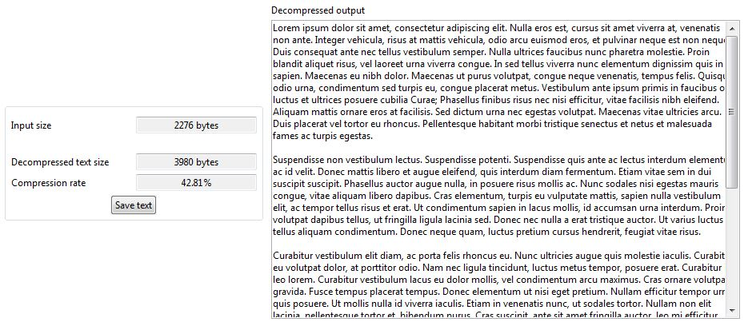
2) After successfully performing a compression or decompression, the Huffman tree structure will be displayed as graph on the second tab.
The Huffman tree is a binary tree, which transmits the information to its leafs. The leafs are green marked and present the ASCII characters of the input text.
On the edges of the graph the bits 1 or 0 are displayed which generate the code words for each character.
On the root and the inner nodes of the tree, which was produced by compression, the probabilities of the characters are displayed. On
a tree which was generated by uncompressing, the root and the inner nodes are displayed as empty nodes because in this
case no probabilities are calculated.
In the upper right corner of the window is the zoom function. Select a zoom step in percent with the drop down menu
When you move with the mouse over a leaf, its path in the tree is shown. This is also the code word of the input character.
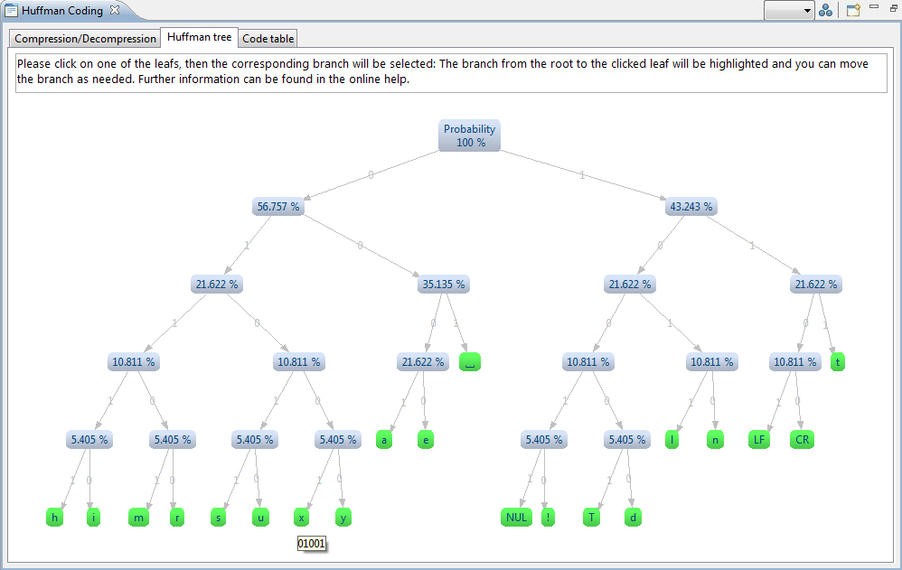
When you click on one of the leafs the corresponding branch will be selected: The branch from the root to the clicked leaf will be highlighted and you can move the branch as needed. The code word of the selected leaf is displayed at the top.
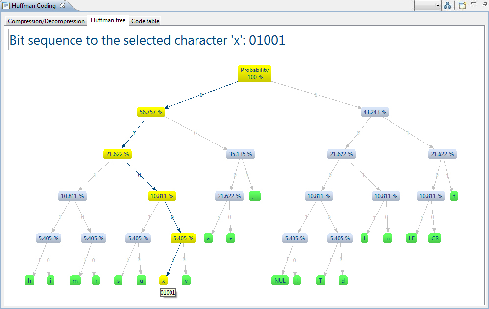
You can change the layout of the Huffman tree by clicking the  icon in the menu bar.
The default layout is the TreeLayout.
icon in the menu bar.
The default layout is the TreeLayout.
Also available are:
HorizontalTreeLayout
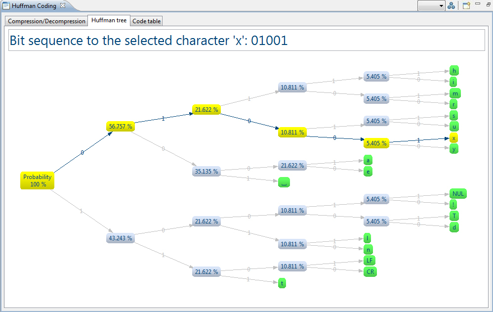
and RadialLayout
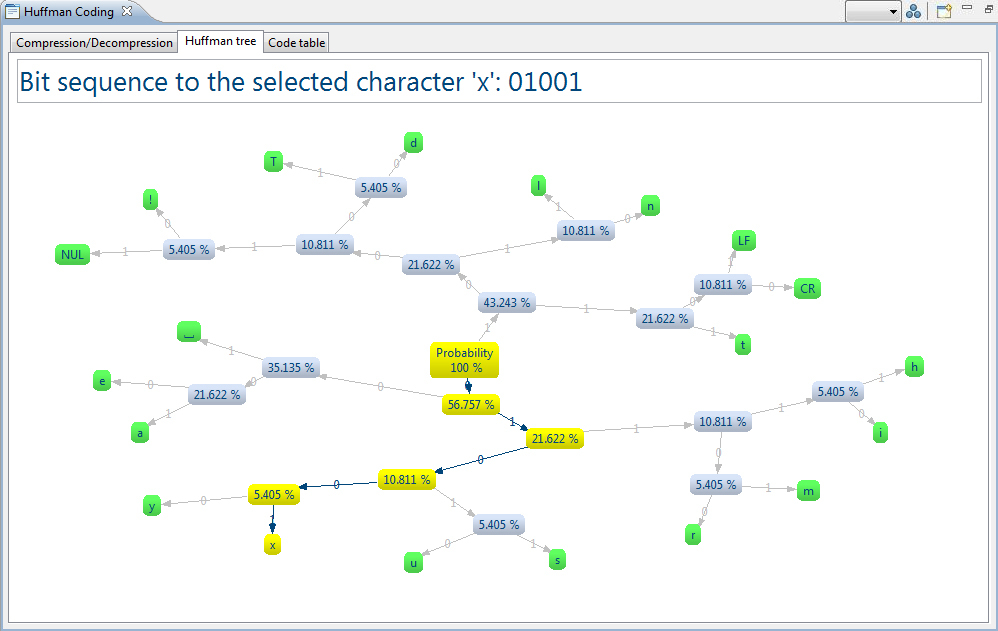
For the graphical structure of the Huffman tree, the ZEST framework was used. ZEST is a visualization toolkit with a set of visualization components built for Eclipse. With ZEST it is possible to visualize trees in an easy way. 3) On the third tab the code table is displayed. For each ASCII character which appears in the input text, its associated code word is displayed. By clicking on the button Show branch the view switches to the tab Huffman tree and selects the corresponding branch.

4) The meaning of the icons in the menu bar
 icon to return to the initial state of the plug-in
and start the algorithm with new user input.
icon in the menu bar. The
layout of Huffman tree changes dynamically. Per default, the Huffman tree is shown in tree layout. There are also the
layouts horizontal tree layout and radial layout available. Different displaying options of the Huffman tree are
offered to simplify the readability of the tree.
icon to return to the initial state of the plug-in
and start the algorithm with new user input.
icon in the menu bar. The
layout of Huffman tree changes dynamically. Per default, the Huffman tree is shown in tree layout. There are also the
layouts horizontal tree layout and radial layout available. Different displaying options of the Huffman tree are
offered to simplify the readability of the tree.5) References